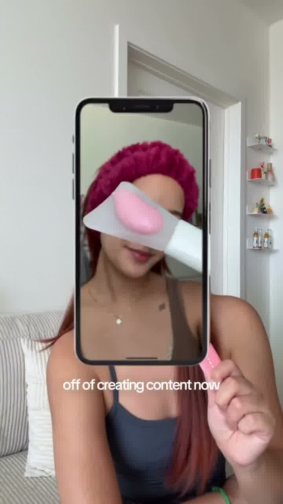
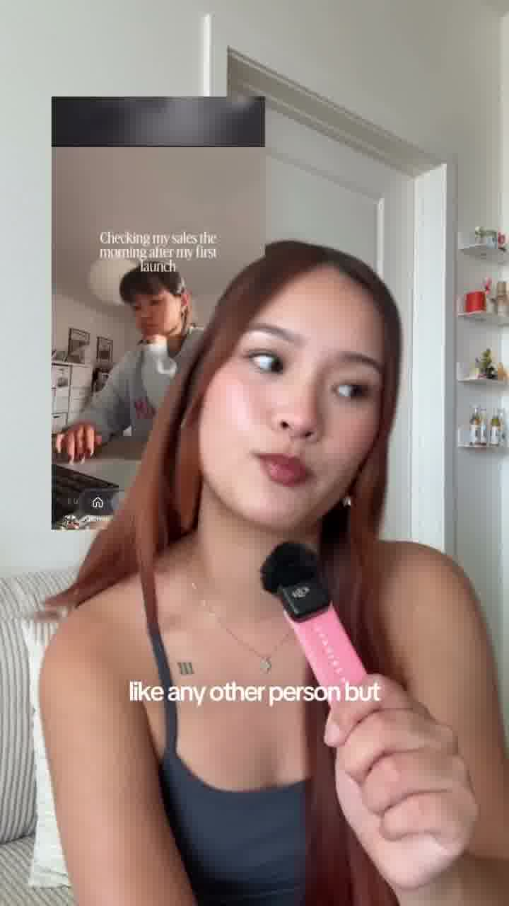
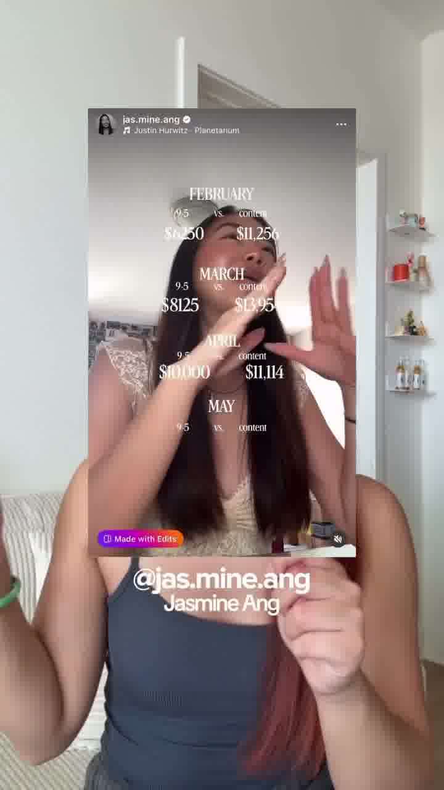
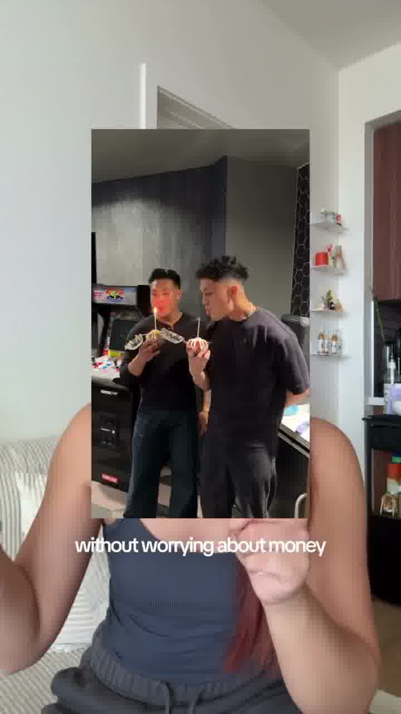
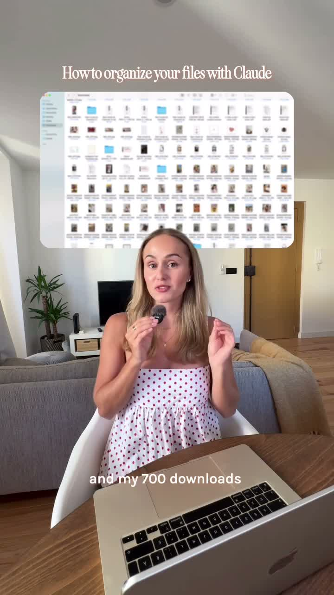
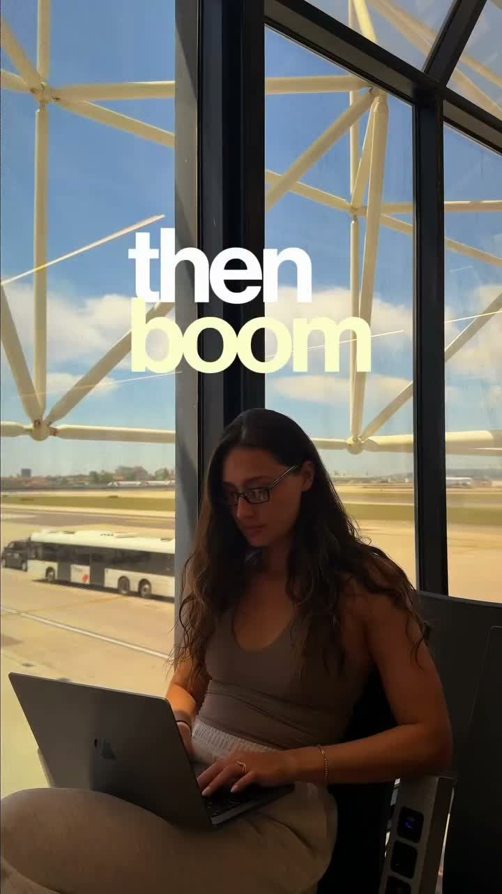

Editor Team — Master Doc
Short-form only. PixSort build-in-public + personal lifestyle. Bookmark this page.
About Tiffany
I'm Tiff — founder of PixSort (iOS app that sorts your camera roll using AI; launched May 2026) and Fire Pit Surplus (ecom brand, $800K in its first 6 months, self-taught SEO). I live in Bali and create build-in-public content full-time.
Content has two layers: ecom + founder authority as the foundation (FPS, SEO, what it actually takes) and PixSort build-in-public as the surface story. Edits should feel professional but human. Never over-produced. Never AI-flavored. Match the storytelling vibe of the Day 1 PixSort video — that's the bar.
Handles
Confirm exact handles with Tiff before tagging in final exports.
Brand — Fonts & Colors
Font UPDATED
Poppins is the one and only caption font. Bold for emphasis words, SemiBold for body. It's free in CapCut's font list and on Google Fonts. Fallback: Montserrat Bold.
- One typeface only. Everything is Poppins — change weight + color, never the font.
- 2 words at a time, clean, centered. White body text.
- Recolor the ONE emotional word per line (cream/yellow or pink) — body stays white. See the storytelling reel below.
- Title cards only: Playfair Display (high-contrast serif) for a persistent topic title on educational videos. Use sparingly.
Replaces the old "thick TikTok-style / Inter Bold 900" caption font.
Colors
Color grading REQUIRED
- All DJI footage is shot in D-Log — first convert to Rec709 using the DJI D-Log → Rec709 LUT
- Then apply the Cinematic LUTs pack on top — this is the look I want
- Match grade across A-roll + B-roll within the same video
- This overrides any "natural / no filter" default — the cinematic grade is the signature look
Resources
Edit Style — Gold Standard NEW
These 3 reels are the bar. They map to 3 edit styles (how we cut) — separate from the 4 Content Pillars below (what we make). If we get close to these 3, the edit is right.
The 3 reference reels — watch in full
| Style | Reel | What it teaches |
|---|
| EDUCATIONAL | charlotte.arsenault | Floating screenshots above the head, persistent title, "Step" chips, click sounds. |
| TALK TO CAMERA | cryschau BASELINE | Keyword pops, phone mockups, screen-recs to the side, B-roll montage. The baseline for talk-to-camera. |
| STORYTELLING | nanadelrey | Keyword color-pops, soft music bed. Source of our main font (Poppins). |
Sound design — CapCut → Audio → Sound effects → search
All native to CapCut. Keep every sound subtle & premium, never loud.
| Search in CapCut | Sound | When to use it |
|---|
click | Soft single click | EVERY text pop + every screenshot swap. Most-used sound. |
swoosh / transition | Light air swipe | Element flies in/out, or a fast transition. |
pop / bubble | Bubbly pop | Keyword, emoji, or icon pops on. |
suspense / dun dun dun | 3-note sting | Suspense / reveal line. Sparingly. |
boom | Cinematic impact | Hard scene cut. NOTE: storytelling "boom" stays spoken — no SFX over it; the cut is the punch. |
sparkle | Shimmer | Optional — shine on a logo or keyword. |
Screenshots & screen recordings — most important for us (we're an app)
- Never cover the face. Float screenshots ABOVE the head, or tuck the screen recording to the side / behind her — small, not in her face.
- Always: rounded corners + soft drop shadow + slight float. Use a Mac-window mockup (traffic-light dots) for prompts/text blocks.
- Put app screenshots INSIDE an iPhone frame — never a flat PixSort screenshot. This is our signature.
- Pixel / mosaic reveal on a screenshot for a quick "cool" moment · jump-zoom "into her" on a punchy line.
- B-roll montage on lifestyle/payoff lines — framed as a phone-shaped inset over the talking head.
Storytelling music
- One soft emotional bed, mixed low, fading under the final line. No beat drops — it carries the heartfelt tone.
- Educational / talk-to-camera: light or none — keep the voice forward.
Visual examples — copy these exactly
Each = a specific move from the reels above, with the frame to copy.

Phone mockup
App clips go INSIDE a real iPhone frame, not a flat screenshot. Our signature.

Screen-rec placement
Recordings sit beside / behind the head — never over the face.

Proof + credit
Screenshots as a phone inset; credit the @handle underneath.

B-roll montage
On payoff lines, rapid-cut clips as phone-shaped insets.

Floating screenshots
Persistent title + windows above the head, click on each swap.

Keyword color-pop
Poppins, recolor one key word ("boom" in cream). "boom" spoken on the cut.
Creators to Study
Secondary references — for pacing + clip density on top of the gold-standard reels above. Pull two things: the look of the on-screen text and the pacing + structure (clip density, hooks, intro format).
On-screen text + title-card style (model this look)
Big bold sans for the punch line (e.g. yellow "I'M 23") paired with an elegant white serif for the payoff (e.g. "and I just RETIRED") — mixed-weight, mixed-case, full-screen title cards.
Pacing + structure (study these)
| # | Creator | Why | Use for |
|---|
| 1 |
Jade Sprake TOP |
The #1 reference. Clip density is the pacing target — constant cuts, sometimes mid-sentence, 4-6 cuts in the first few seconds. Heavy B-roll. Super authentic. Recurring pillar formula (FB spend, entrepreneurship) we want to replicate. |
All pillars — pacing + structure bible |
| 2 |
Chris Raroque |
Same app-journey arc we're running. Build-in-public structure, founder insights. |
Pillar 1 + 2 — direct template |
| 3 |
Khris Sheer |
Vlog-style storytelling, daily series energy. |
Pillar 1 |
| 4 |
Omaron Tape |
Strong initial hook + repeatable intro format. We can replicate the intro structure 1:1. |
All pillars — hook + intro framework |
Goal post for engagement → Melanie Renee — heating goal
Before Your First Edit — Onboarding
⭐
Shared IG album — content I like. I save Reels + posts I want us to reference into a shared Instagram collection. Open it before every edit and pull pacing, text, and color cues from it. This is the living "this is the vibe" folder — it updates as I find new references. →
Open the shared album
Watch + read these before touching your first brief.
Style baseline (watch in this order)
- Tiffany's own videos — the baseline. Match pacing, text style, color treatment from her existing posts. When in doubt, look at what she's already published.
- Jade Sprake — clip density is the pacing target. She changes clips constantly, sometimes mid-sentence. The first few seconds often have 4-6 cuts. If you're holding on one shot for more than 4 seconds during B-roll, ask yourself if it should cut.
- Tiff's lifestyle reel — pacing + text baseline
- Jade Sprake reel — clip density + B-roll pacing reference
Sample briefs (read 2 before starting)
Content Pillars
All content fits one of these 4 pillars (what we make). These are separate from the 3 Edit Styles above (how we cut) — a Build-in-Public video can be cut talk-to-camera or storytelling. Pillar 1 is the engine.
1Build in Public
Series anchor. Daily vlog structure. Day N of building PixSort to $10k/mo.
Goal: consistency + audience retention. The flagship pillar — most volume.
Style: Day 1 video baseline. Hook + story arc + cliffhanger. Lots of motion + b-roll cuts every 2-4s.
2Founder Insights
Educational. Positions me as credible.
Goal: drive authority + saves/shares. Pull from FPS + SEO experience.
Style: talking-head heavy, supporting text on screen emphasizing key words, light b-roll, clear visual hierarchy.
3The Problem
Pain point content. Drives PixSort awareness + downloads.
Goal: conversion-leaning. Speak directly to the photo-organizing pain (full camera roll, can't find anything, 23k photos).
Style: punchy hook in first 1.5s, demo the pain visually, soft app reveal at end.
4Lifestyle
Personal brand. Bali life, gym, padel, surfing, sandboarding, founder dinners. Relatability + engagement.
Goal: humanize me. Pulls non-PixSort audience in.
Style: aesthetic + cinematic. LUTs matter most here. Showcase actual hobbies (padel, surf, sandboard) — not generic Bali shots.
Reusable Assets (Already Shot)
Don't shoot what we already have. Pull from these before requesting new footage.
- #1 TIFF.mp4 — hero cut from Sayu, baseline reference for the lifestyle-into-founder vibe
- App launch day (May 10, 2026) — talking head + reaction clips, good for pillar 1 callbacks
- Early-life / turning 30 batch (May 21) — college, family, early 20s footage for nostalgia beats
- Voice notes on style — Tiff's audio note on street-interview style (5/12) lives in the WhatsApp folder
- Bali footage (D-Log) — DJI Bali folder in Google Drive, 100GB+ of color-gradable b-roll
- User interview footage — Jennifer interview, dating-scene interview (needs redo), sauna talking head (treehouse alt preferred)
- Day 1 building an app — final cut — project file. Use as template.
- Master clips folder (Google Drive) — pull from here first before requesting new footage
- Cinematic LUTs pack — required for all D-Log footage
B-Roll Albums
Shared iCloud albums — pull B-roll from here before requesting new footage.
Team Rules
Response & turnaround
- 5 hour max reply time during your working hours. Flag timezone + working hours in writing.
- First cut within 24 hours of brief.
- Revisions within 24 hours of feedback.
- Flag missing clips, unclear briefs, or blockers within 12 hours of receiving the brief. Not the day it's due.
- If you'll miss a deadline, message before it's missed with a new ETA. Late heads-up = fine. Silence = not fine.
Communication
- One thread per project (Upbase / WhatsApp). No scattered DMs.
- Raise blockers as you experience them, not after — silence delays the whole pipeline.
- Confirm receipt of every brief with a thumbs up or "got it."
- All questions go to Jatin. Do not message Tiffany. Broken clip link, missing folder, footage that contradicts the brief → message Jatin with the V_ID + clip ID before doing anything.
Deliverables
- Export 1080×1920 vertical, 4K source when available, 30fps unless brief says otherwise.
- Filename convention:
V_NNN_topic_FINAL_v1.mp4
- Always also deliver the CapCut project file alongside the final export — needed for trial-reel variants and re-cuts.
- Upload to the shared Google Drive folder. Never WeTransfer or personal links.
- Include a short note with creative calls you made + the song/audio you used.
Source footage & project files
- Never delete project files. Store every CapCut/FCP project so we can repost as trial reels with font/color tweaks.
- Source raw footage stays until the project is fully approved + paid.
- Back up working files weekly minimum.
Feedback loop
- Round 1: full notes from me.
- Round 2: only fixes.
- Round 3+: only if scope changed.
- If a note is unclear, ask before guessing.
Music selection
- Use trending audio or trending background music where possible. Check TikTok Creative Center or IG Reels trending tab before picking.
- Music must fit the storyline — energy shifts should line up with cuts, reveals, or beats. No random drop-ins.
- If a trending track doesn't fit the story, pick story-fit over trend. Story always wins.
- Flag the track choice in your delivery note (song name + why it fits).
- No copyrighted commercial tracks unless cleared. Use in-app libraries or Epidemic / Artlist / Musicbed.
- Storytelling edits: one soft emotional bed, mixed low, fading under the final line — no beat drops. See the storytelling reel in Edit Style — Gold Standard.
Creative direction
- Treat the brief as a base reference, not strict instructions. Add your editing style on top — that's why I hire you.
- Insert the PixSort app logo where it fits naturally.
- Zoom in on my face during emotional/key moments.
- Captions throughout the entire video, not just sometimes — even when on-screen text is already showing.
- Color match across A-roll and B-roll in the same video.
Hard rules (not suggestions)
- DAY X slam — every Day Series video opens with a large white "DAY X" text on frame 1, bold, centered, holds 2 seconds. Before she speaks. Same style across every episode. Non-negotiable.
- Hook is untouchable — never trim the opening line. Never split it across two clips. The hook was chosen for the full delivery.
- B-roll audio muted — mute original audio on all B-roll beats unless the brief explicitly says to keep it. Music underneath only.
- Outfit continuity in Day Series — every clip in a single Day Series video must show the same outfit. Open every clip before cutting. If anything doesn't match, flag it.
- Length — 30-75 seconds. The brief specifies. Do not pad.
- Aspect ratio — 9:16 vertical, 1080×1920. Every video. No exceptions.
- File naming — use the exact name from the brief. Example:
V_091_day2-app-wasnt-working_FINAL_v1.mp4. Do not rename.
- Upload location — the exact Drive folder in the brief's Delivery section. Missing folder → message Jatin.
- Brief wins over this doc — if they ever contradict, the brief takes priority.
PixSort caption spelling — fix every instance
Auto-captions always mishear the app name. Manually correct every single one before export.
| Auto-caption says (WRONG) | Must say (CORRECT) |
|---|
| Picsort / Pixar / Pixort | PixSort |
| Pick Sort / Pick Store | PixSort |
| Pig Store / Pig Sort | PixSort |
| Pixar Sort / PicSort | PixSort |
Export specs
| Spec | Value |
|---|
| Resolution | 1080 × 1920 (9:16) |
| Codec | H.264, MP4 |
| Bitrate | 12-16 Mbps |
| Audio | AAC · 48kHz · stereo · -14 LUFS master |
| Captions | Burned in — not a sidecar file |
| Frame rate | Match source. Do not transcode. |
Quality bar — non-negotiables
- Audio leveled (-14 LUFS for social, no peaking).
- Captions checked for typos and timing.
- No copyrighted music unless cleared.
- Color grade applied to all D-Log footage before export.
- CapCut project file saved + delivered with every final.
- Watch the full export back at least once before sending.
Short Form — Reference Videos
| Creator | Example | Why I like it | What to watch for |
|---|
| Me (Tiff) |
Watch |
Pacing on point. Colors + text + thumbnail nailed. |
Baseline for my personal lifestyle videos. |
| Meglovesdata (carousels) |
Ex 1 · Ex 2 |
Professional, helpful, still IG-aesthetic. Carousels are really good. |
Carousel layout + visual rhythm. |
| Meglovesdata (reel) |
Watch |
Simple sound + visuals that support the message. |
How minimal sound design carries a message. |
| Jade Sprake |
Watch |
Super authentic. Tons of b-roll, clip changes every 1-2s. |
Count clips in the first sentence. Pillar formula. |
| Street interview |
Watch |
The vibe I want for "asking strangers about my app" videos. |
Visual hook at top of screen. |
Workflow Notes
- Trial reels strategy: Every final → CapCut project shared → VA tweaks font/color/saturation → reposts as trial reel. Goal: 10x reach per original edit.
- Daily series cadence: Day N of building PixSort is the engine. Backlog should always have 5+ days ready.
- 60-second cuts: When possible, deliver a 60s version alongside the full cut for cross-platform.
- Pinned demo video: Highest-priority always. Lives at the top of profile.